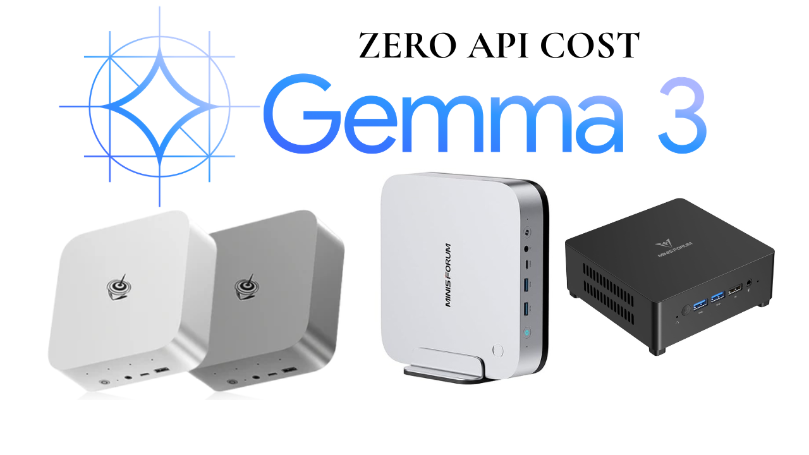

You have probably heard the buzz: Google's Gemma 3 27B is one of the most capable open-weight AI models ever released. It outperforms models many times its size, supports vision (images + text), understands 140+ languages, and has a massive 128,000-token context window.
And the best part? You can run it entirely on your own hardware, for free, with zero API fees.
But here is the challenge: a 27-billion parameter model is not a small model. Your old laptop will struggle. A Raspberry Pi is completely out of the question. You need a machine that can fit the model weights into fast memory and actually move data through the neural network at a usable speed.
The good news: in 2026, you can get a Mini PC capable of running Gemma 3 27B comfortably for under $500.
Here is the ultimate guide to choosing the right Mini PC for local Gemma 3 27B inference.
Why Gemma 3 27B Is the Model Worth Running Locally
Released by Google in March 2025, Gemma 3 27B was trained on 14 trillion tokens using the same research that powers Google's Gemini 2.0 models. What makes it special for home users?
- Multimodal: It can analyze images as well as text — useful for describing photos, reading charts, or coding from screenshots.
- Long context: A 128K token context window means it can read entire books, long PDFs, or massive codebases in one go.
- Efficient architecture: Its unique 5:1 local-to-global attention ratio cuts memory usage dramatically — KV-cache is only ~8% of model size at 32K tokens, making 128K context feasible on consumer hardware.
- QAT versions available: Quantization-Aware Training (QAT) variants provide nearly identical quality at up to 3× less memory, making 27B realistic on a 32GB Mini PC.
The Core Problem: RAM Is Everything
To understand why Mini PC selection matters, you need to understand the number one rule of local LLM inference:
Gemma 3 27B in standard precision requires around 60 GB of storage and at least 18 GB of free RAM at minimum to run. The QAT (quantized) version shrinks this to roughly 16–20 GB of required RAM, making 32 GB systems viable.
But RAM alone isn't enough. The speed at which data moves between your RAM and processor is called memory bandwidth. This is the single biggest bottleneck for local inference. Modern DDR5 RAM is roughly 2× faster than DDR4 — which directly translates to 2× more tokens per second.
iGPU Inference: The Game Changer for Mini PCs
Modern AMD Ryzen 7000 and 8000 series chips use a Unified Memory Architecture. This means your system RAM doubles as the GPU's VRAM with zero transfer overhead. An AMD Mini PC with 32–64 GB of DDR5 RAM effectively gives its integrated Radeon 780M GPU a massive pool of fast video memory.
When you run Gemma 3 27B through Ollama on such a machine, the tool automatically offloads as many model layers to the iGPU as possible. The result: speeds of 8–15 tokens per second on the QAT model — perfectly conversational for a single user.
The Encoder Comparison: Why AMD APUs Win in 2026
| Feature | AMD Ryzen 8000 (iGPU) | Intel Core Ultra (iGPU) | Discrete GPU (eGPU) |
|---|---|---|---|
| Unified Memory? | ⭐⭐⭐⭐⭐ Yes (DDR5) | ⭐⭐⭐ Partial (Arc) | ⭐⭐ No (dedicated VRAM) |
| Cost | ⭐⭐⭐⭐ $350–$500 | ⭐⭐⭐ $400–$600 | ⭐⭐ $800–$1200+ |
| Tokens/sec (27B QAT) | ⭐⭐⭐⭐ 8–15 t/s | ⭐⭐⭐ 5–10 t/s | ⭐⭐⭐⭐⭐ 40–80 t/s |
| Power Draw (idle) | ⭐⭐⭐⭐⭐ ~10W | ⭐⭐⭐⭐ ~12W | ⭐⭐ 50–200W |
| For Home AI Server? | ⭐⭐⭐⭐⭐ Perfect | ⭐⭐⭐ Good | ⭐⭐ Expensive/Loud |
The Top 5 Mini PCs for Gemma 3 27B in 2026
1. Minisforum UM890 Pro (The Overall Winner)
Best For: Users who want the absolute best iGPU inference performance in a Mini PC.
The Minisforum UM890 Pro is the powerhouse of this list. Its AMD Ryzen 9 8945HS processor with Zen 4 architecture, combined with the AMD Radeon 780M integrated GPU and support for up to 96 GB DDR5 RAM, makes it the undisputed king of Mini PC AI inference in 2026. The Cold Wave 2.2 cooling system keeps the chip running at full boost clocks even under sustained model inference loads — something cheaper coolers fail at.
Critically, it features an OCuLink port. This 64 Gbps connection lets you plug in an external GPU enclosure later if you outgrow the iGPU — a future-proof upgrade path no other Mini PC on this list offers.
Why for Gemma 3 27B? With 32 GB DDR5, the QAT model loads fully into RAM. Ollama offloads layers to the Radeon 780M iGPU automatically, hitting 10–15 tokens/sec. Upgrade to 64 GB and you can run the full-precision model. The OCuLink port means this machine can scale with you for years.
2. Beelink SER9 (The Performance-Per-Dollar King)
Best For: Users who want flagship performance without paying the Minisforum premium.
The Beelink SER9 uses the same AMD Ryzen 9 7940HS or 8945HS chip as the UM890 Pro in many configurations, but undercuts the price by $100–$150. Beelink has significantly improved their build quality over the past two years, and the SER9 is a reliable, well-reviewed machine. The only tradeoff is the absence of an OCuLink port — making it slightly less future-proof for eGPU expansion. It still has USB4 for a Thunderbolt-based GPU enclosure (with ~15–20% bandwidth overhead vs OCuLink).
Why for Gemma 3 27B? Functionally identical inference performance to the UM890 Pro for ~$100 less. If you never plan to attach an eGPU, this is the smarter buy. The 32 GB DDR5 is sufficient for the QAT model; upgrading to 64 GB unlocks the full-precision Gemma 3 27B.
3. Minisforum AI X1 Pro (The Future-Proof Powerhouse)
Best For: Power users and home lab enthusiasts who want maximum scalability.
The AI X1 Pro is Minisforum's flagship in 2026, built around the AMD Ryzen AI 9 HX 370 with dedicated NPU (Neural Processing Unit) acceleration. It supports up to 128 GB of RAM across 3 M.2 slots, OCuLink at 64 Gbps, and dual 2.5GbE networking — a full workstation packed into a Mini ITX chassis. This machine can run Gemma 3 27B at full precision without breaking a sweat, and the built-in 135W power supply means it can power a serious eGPU simultaneously.
Why for Gemma 3 27B? The Radeon 890M is faster than the 780M. More importantly, up to 128 GB of RAM means you can load multiple large models simultaneously — Gemma 3 27B plus Llama 3 70B if you're feeling adventurous. This is the machine you buy when you're serious about local AI.
4. ACEMAGIC M5 (The Intel Alternative)
Best For: Users in Intel's ecosystem who also need heavy multi-core CPU work alongside inference.
The ACEMAGIC M5 launched recently with an Intel Core i5-14500HX — a 14-core, 20-thread chip that provides exceptional multi-threaded CPU performance. For pure Gemma 3 27B inference speed, it trails the AMD options (Intel's Arc iGPU does not match AMD's Radeon 780M for LLM layer offloading). However, if you need to run simultaneous tasks like compiling code, running Docker containers, and inference at the same time, the M5's wider core count shines. It also benefits from Intel's mature OneAPI ecosystem.
Why for Gemma 3 27B? CPU-only inference on 14 cores with 32 GB DDR5 achieves around 6–10 tokens per second on the QAT model. Slower than AMD for GPU-offloaded inference, but if you also plan to run heavy Docker workloads, build pipelines, or RAG servers alongside the model, the extra cores pay dividends.
5. Minisforum UM790 Pro (The Mature & Reliable Choice)
Best For: Deal hunters and users who value a battle-tested, mature platform with proven BIOS stability.
The UM790 Pro uses the previous-generation Ryzen 9 7940HS, which is technically a step behind the 8945HS but delivers 90% of the real-world performance in most tasks. It has been on the market longer, meaning BIOS updates have refined performance, driver maturity is excellent, and the community knowledge base is huge. If the UM890 Pro is out of stock or too expensive, this is the first machine you should look at.
Why for Gemma 3 27B? The Radeon 780M iGPU is identical in performance to the 8945HS version. You save $100–$130 versus the UM890 Pro and get a machine that has proven rock-solid reliability. The 32 GB DDR5 is sufficient for the QAT model today, and 64 GB is achievable with a RAM upgrade.
Full Specs Comparison
| Model | CPU | iGPU | Max RAM | OCuLink? | 27B QAT Speed* | Price |
|---|---|---|---|---|---|---|
| Minisforum UM890 Pro | Ryzen 9 8945HS | Radeon 780M | 96 GB | ✅ Yes | ~12–15 t/s | $430–$499 |
| Beelink SER9 | Ryzen 9 7940HS | Radeon 780M | 64 GB | ❌ No | ~10–13 t/s | $329–$399 |
| Minisforum AI X1 Pro | Ryzen AI 9 HX 370 | Radeon 890M | 128 GB | ✅ Yes | ~15–20 t/s | $549–$649 |
| ACEMAGIC M5 | Core i5-14500HX | Intel Arc | 64 GB | ❌ No | ~6–10 t/s | $449–$549 |
| Minisforum UM790 Pro | Ryzen 9 7940HS | Radeon 780M | 64 GB | ❌ No | ~10–13 t/s | $299–$369 |
*Token speeds are approximate figures for Gemma 3 27B QAT model via Ollama with iGPU offloading on 32 GB DDR5. Results vary by quantization level, OS, and configuration.
How Much RAM Do You Actually Need?
This is the most common question — and the answer depends on which version of Gemma 3 27B you plan to run.
| Model Version | Approx. RAM Required | Recommended System RAM | Speed on 780M iGPU |
|---|---|---|---|
| Gemma 3 27B (Full Precision) | ~60 GB | 64 GB minimum | ~8–10 t/s |
| Gemma 3 27B Q4_K_M | ~18 GB | 32 GB recommended | ~12–15 t/s |
| Gemma 3 27B QAT (Google official) | ~16–20 GB | 32 GB recommended | ~10–14 t/s |
The practical recommendation: Buy a Mini PC with 32 GB of DDR5 and ensure it has upgradeable RAM slots. Start with the QAT or Q4 quantized version of the model. If you want the full experience later, upgrade to 64 GB.
Quick Setup Guide: Running Gemma 3 27B with Ollama
Once your Mini PC arrives, here is the fastest path to a working local AI:
- Install Ubuntu 24.04 LTS (free download from ubuntu.com). It uses less RAM than Windows and the GPU drivers for AMD are built in.
- Install Ollama with one command:
curl -fsSL https://ollama.com/install.sh | sh - Pull the model:
ollama pull gemma3:27b
(Or use the QAT version:ollama pull gemma3:27b-instruct-q4_K_M) - Run it:
ollama run gemma3:27b - Optional: Install Open WebUI for a ChatGPT-like browser interface:
docker run -d -p 3000:8080 --add-host=host.docker.internal:host-gateway ghcr.io/open-webui/open-webui:main
ollama ps while a model is loaded. Look for "GPU" in the output. If it says "CPU only," check that your AMD ROCm drivers are installed and run OLLAMA_GPU_OVERHEAD=0 ollama serve to force GPU detection.
People Also Ask (FAQ)
Common questions about running Gemma 3 27B locally on a Mini PC.
How much RAM do I need to run Gemma 3 27B locally?
+Gemma 3 27B requires at least 18 GB of free RAM for the quantized version. For comfortable operation alongside an OS and other tools, 32 GB is the recommended minimum. With 64 GB you can run the full-precision model. Always buy a Mini PC with upgradeable RAM slots so you are not locked in.
Can an AMD iGPU run Gemma 3 27B?
+Yes. AMD's Radeon 780M integrated graphics in Ryzen 7000/8000 series mini PCs shares DDR5 system RAM as VRAM with zero transfer overhead. Ollama automatically offloads model layers to the iGPU. With 32 GB of DDR5, you can expect 10–15 tokens per second on the Q4 quantized version of Gemma 3 27B — perfectly conversational for a single user.
What is OCuLink and why does it matter for local LLMs?
+OCuLink is a 64 Gbps external PCIe interface found on premium mini PCs like the Minisforum UM890 Pro and AI X1 Pro. It lets you attach an external GPU enclosure containing a card like an RTX 4070 or RTX 4090. For Gemma 3 27B, this can jump inference speed from ~12 tokens/sec (iGPU) to 50–80+ tokens/sec — a dramatic upgrade with no need to buy a new computer.
Why is my Gemma 3 27B inference slow or crashing?
+The three most common causes are: (1) Insufficient RAM — the model starts swapping to disk, killing performance. Check your free RAM with free -h before loading the model. (2) GPU offloading is disabled — run ollama ps to verify layers are loading to GPU. (3) Using the wrong model version — start with the QAT or Q4_K_M quantized version, not the full 60 GB model, until you have 64 GB+ of RAM.
Want a full step-by-step Ollama + Open WebUI setup tutorial with GPU passthrough? Let me know in the comments below!
Final Recommendations
Running Gemma 3 27B locally is now achievable on an affordable Mini PC in 2026. The model is remarkable — multimodal, long-context, private, and completely free. Here is the quick summary:
- Buy the Minisforum UM890 Pro if you want the best iGPU inference, OCuLink for future eGPU expansion, and a machine that handles anything you throw at it.
- Buy the Beelink SER9 if the UM890 Pro is out of budget — you get 90% of the performance for significantly less.
- Buy the Minisforum AI X1 Pro if you are serious about local AI and want the option of running multiple 27B+ models simultaneously.
- Buy the Minisforum UM790 Pro if you are a deal hunter — the same Radeon 780M iGPU, mature platform, and frequently discounted.
In every case: make sure you get 32 GB of DDR5 RAM minimum, buy a machine with upgradeable SO-DIMM slots, and run Linux + Ollama for the best performance.